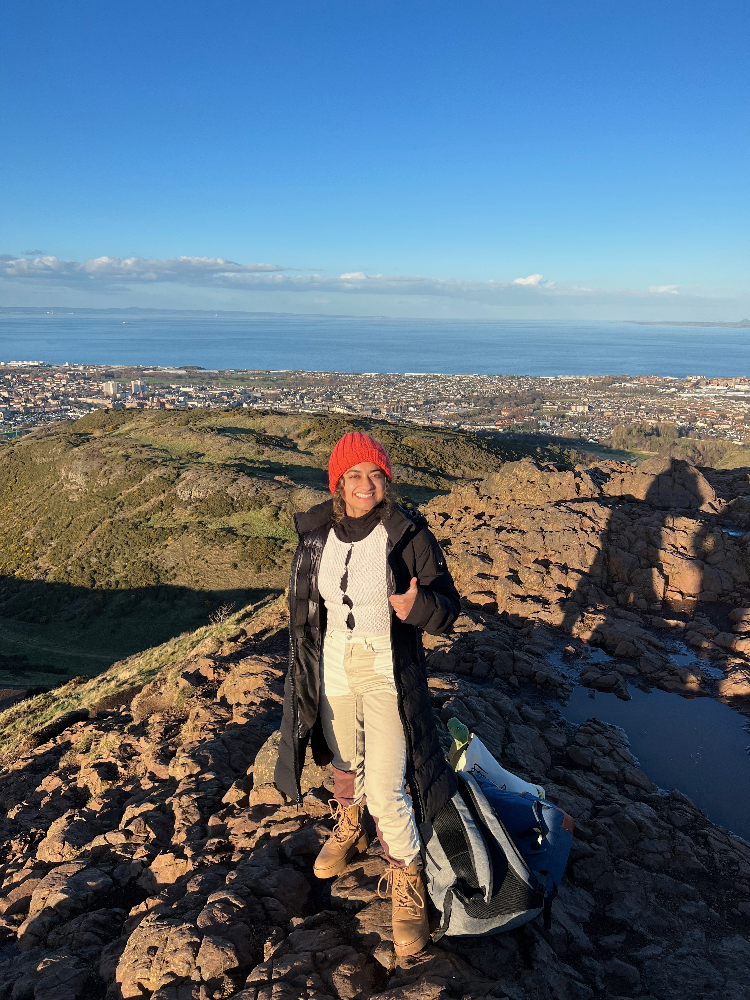
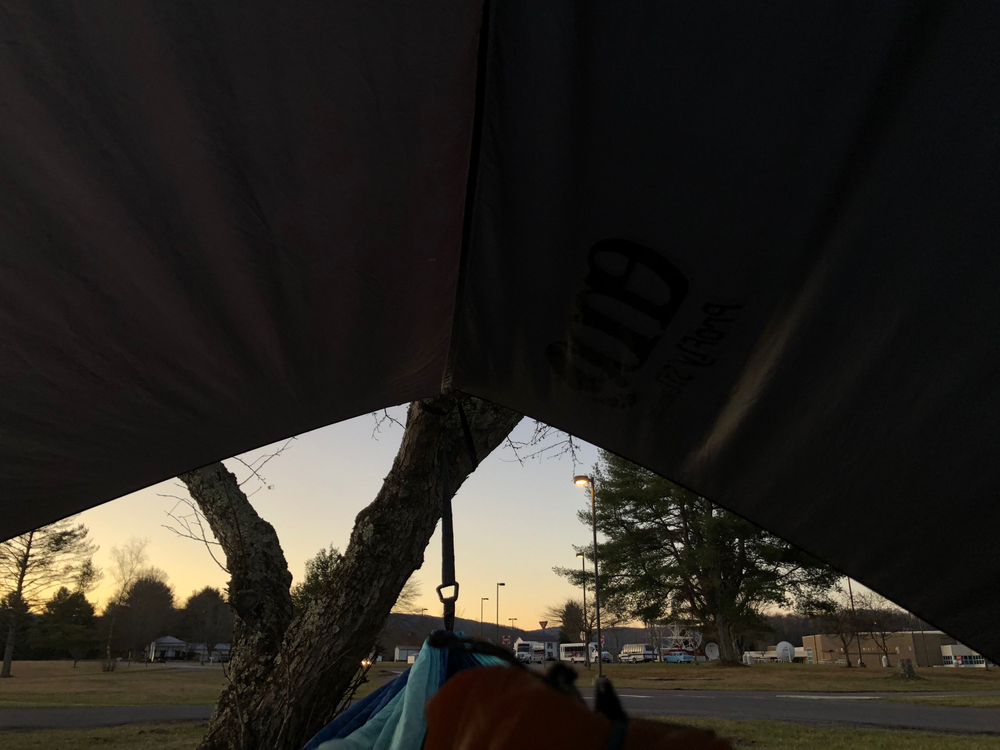

My name is Sanskruti Admane (pronounced sun-screw-tea uh-duh-mah-nay)! I use she/her pronouns. I have lived near Columbus for most of my life, but I also lived in India for four years during middle school. I am Indian American, and can speak/read/write Marathi and Hindi.
I am an undergraduate at Ohio State, double majoring in astronomy and physics. My interests in these subjects came from YouTube videos in middle school. Since then, I have been interested in learning as much as I can about space and physical phenomena. I've dabbled in several areas of research, including particle physics, planetary science, and experimental condensed matter.
Through my Latin minor, I have been able to research the evolution of astronomy through Ancient Rome. This has been an enriching experience, allowing me to apply my astrophysics background to contextual analysis of another language! I will be writing one of my senior theses about this research, so stay tuned!
Outside of school, I am heavily involved in outreach work. You can read more about it here! I also make my own espresso (so important for a physics major), and love biking and hiking!

I love traveling because it allows me to immerse myself in new cultures, and meet new people. Here I am on a trip to Scotland, at the top of Arthur's Seat in March 2023!

I also love hammocking, especially on outdoor trips. During OSU's trip to Greenbank Observatory in March 2023, I stayed in a hammock for the weekend. I woke up to the sunrise, which was beautiful.